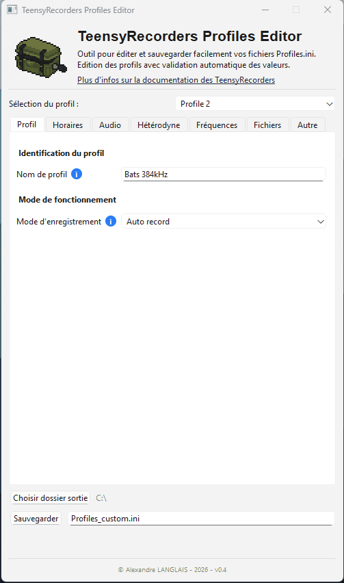

TeensyRecorder Profiles Editor : logiciel de configuration pour détecteurs open-source
Les TeensyRecorders sont des enregistreurs acoustiques open-source (conçu par Jean-Dominique VRIGNAULT) développés à partir des cartes de développement Teensy.
Pensés pour les suivis bioacoustiques (chauves-souris, oiseaux, orthoptères, etc.), ils offrent une grande flexibilité de paramétrage, une excellente qualité de capture et une consommation réduite, ce qui en fait des outils de choix pour les protocoles de terrain longue durée.
Leur développement est très actif au sein de la communauté francophone, avec de nombreuses améliorations matérielles et logicielles issues de retours d'expérience sur le terrain : qualité de l'alimentation, horodatage, gestion multi-profils, options d'enregistrement, déclencheurs automatiques, etc.
Etant très investi dans ce projet sur des volets d'organisation d'ateliers de fabrication annuel, de tests, de conception d'accessoires et de développement logiciel, j'ai souhaité créer un outil facilitant la configuration des appareils.


PassiveRecorder (version stéréo) à gauche, et ActiveRecorder à droite
Objectifs
À force d'utiliser intensivement les TeensyRecorders dans des protocoles expérimentaux, une contrainte est apparue : la configuration manuelle des nombreux paramètres via l'écran intégré (20 px de large) devenait fastidieuse.
Au fil des mises à jour, la liste des options s'est allongée (fréquences, gains, déclencheurs, durées, formats, seuils, etc.) rendant la navigation dans les menus moins fluide, surtout lors de tests successifs.
Les appareils utilisent un fichier de configuration .ini, qui regroupe jusqu'à cinq
profils indépendants, commutables directement sur le terrain.
L'idée a donc été de concevoir une application desktop ergonomique, permettant de :
- Programmer facilement les profils de configuration
- Gérer, renommer et versionner ses profils
- Exporter automatiquement les fichiers
.iniprêts à être transférés sur l'appareil
Cette approche permet ainsi un gain de temps considérable pour les acteurs de terrain, tout en garantissant la traçabilité des configurations utilisées dans les études.
Ergonomie et conception
Développée en Python (PyQt6), l'application propose une interface claire et
segmentée en plusieurs onglets thématiques (général, déclencheurs, enregistrement, etc.) pour
faciliter la navigation.
Chaque paramètre dispose :
- d'un champ adapté à son type (booléen, numérique, texte limité, liste de choix, etc.)
- d'une validation automatique pour éviter les erreurs de format
- d'une sauvegarde en cache avant export
- d'un accès à la documentation officielle des appareils
Un menu déroulant permet de sélectionner et renommer les profils, afin de les retrouver facilement sur l'appareil.
L'application évolue en parallèle des mises à jour du firmware TeensyRecorders, assurant une compatibilité continue avec les nouvelles variables ajoutées.
Elle est compatible avec Windows, MacOS et Linux.

Rendu de l'application desktop
Fonctionnement de l'importation sur le détecteur
La procédure est simple et en 4 étapes :
- Générer votre fichier
Profiles.inivia l'application. - Copier le fichier sur la carte SD du détecteur.
- Sur le TeensyRecorder : accéder au menu
Modif. des profils, puis, sélectionnerLect. fic. Profilespour charger le fichier. - De retour sur le menu principal, choisir le profil souhaité via la section
Profil.
L'appareil chargera automatiquement les valeurs associées au profil choisi.